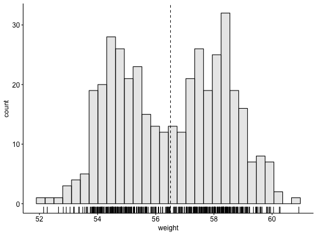
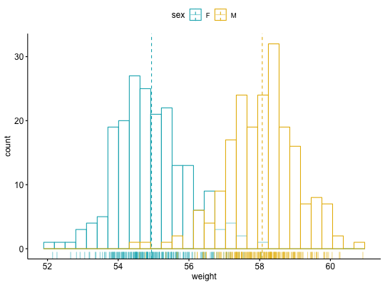
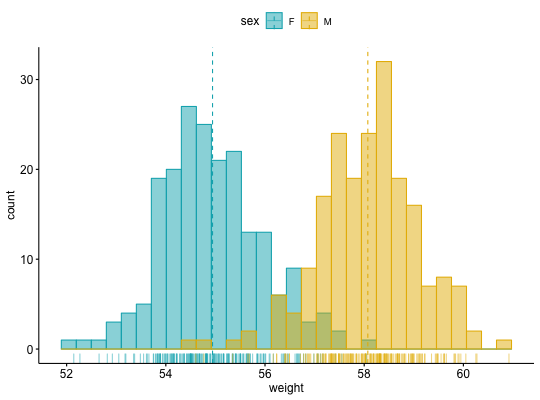
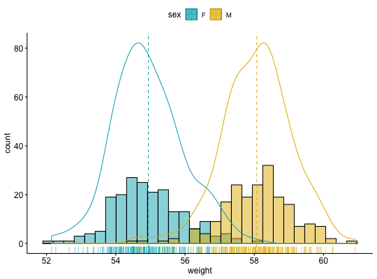

Create a histogram plot.
gghistogram(data, x, y = "..count..", combine = FALSE, merge = FALSE,
color = "black", fill = NA, palette = NULL, size = NULL,
linetype = "solid", alpha = 0.5, bins = NULL, binwidth = NULL,
title = NULL, xlab = NULL, ylab = NULL, facet.by = NULL,
panel.labs = NULL, short.panel.labs = TRUE, add = c("none", "mean",
"median"), add.params = list(linetype = "dashed"), rug = FALSE,
add_density = FALSE, label = NULL, font.label = list(size = 11, color =
"black"), label.select = NULL, repel = FALSE, label.rectangle = FALSE,
position = position_identity(), ggtheme = theme_pubr(), ...)
Arguments
- data
- a data frame
- x
- variable to be drawn.
- y
- one of "..density.." or "..count..".
- combine
- logical value. Default is FALSE. Used only when y is a vector
containing multiple variables to plot. If TRUE, create a multi-panel plot by
combining the plot of y variables.
- merge
- logical or character value. Default is FALSE. Used only when y is
a vector containing multiple variables to plot. If TRUE, merge multiple y
variables in the same plotting area. Allowed values include also "asis"
(TRUE) and "flip". If merge = "flip", then y variables are used as x tick
labels and the x variable is used as grouping variable.
- color, fill
- histogram line color and fill color.
- palette
- the color palette to be used for coloring or filling by groups.
Allowed values include "grey" for grey color palettes; brewer palettes e.g.
"RdBu", "Blues", ...; or custom color palette e.g. c("blue", "red"); and
scientific journal palettes from ggsci R package, e.g.: "npg", "aaas",
"lancet", "jco", "ucscgb", "uchicago", "simpsons" and "rickandmorty".
- size
- Numeric value (e.g.: size = 1). change the size of points and
outlines.
- linetype
- line type. See
show_line_types.
- alpha
- numeric value specifying fill color transparency. Value should
be in [0, 1], where 0 is full transparency and 1 is no transparency.
- bins
- Number of bins. Defaults to 30.
- binwidth
- numeric value specifying bin width. use value between 0 and 1
when you have a strong dense dotplot. For example binwidth = 0.2.
Read more about binwidth.
- title
- plot main title.
- xlab
- character vector specifying x axis labels. Use xlab = FALSE to
hide xlab.
- ylab
- character vector specifying y axis labels. Use ylab = FALSE to
hide ylab.
- facet.by
- character vector, of length 1 or 2, specifying grouping
variables for faceting the plot into multiple panels. Should be in the data.
- panel.labs
- a list of one or two character vectors to modify facet panel
labels. For example, panel.labs = list(sex = c("Male", "Female")) specifies
the labels for the "sex" variable. For two grouping variables, you can use
for example panel.labs = list(sex = c("Male", "Female"), rx = c("Obs",
"Lev", "Lev2") ).
- short.panel.labs
- logical value. Default is TRUE. If TRUE, create short
labels for panels by omitting variable names; in other words panels will be
labelled only by variable grouping levels.
- add
- allowed values are one of "mean" or "median" (for adding mean or
median line, respectively).
- add.params
- parameters (color, size, linetype) for the argument 'add';
e.g.: add.params = list(color = "red").
- rug
- logical value. If TRUE, add marginal rug.
- add_density
- logical value. If TRUE, add density curves.
- label
- the name of the column containing point labels. Can be also a
character vector with length = nrow(data).
- font.label
- a list which can contain the combination of the following elements: the size
(e.g.: 14), the style (e.g.: "plain", "bold", "italic", "bold.italic") and
the color (e.g.: "red") of labels. For example font.label = list(size = 14,
face = "bold", color ="red"). To specify only the size and the style, use font.label =
list(size = 14, face = "plain").
- label.select
- can be of two formats:
- a character vector
specifying some labels to show.
- a list containing one or the
combination of the following components:
-
top.up and
top.down: to display the labels of the top up/down points. For
example, label.select = list(top.up = 10, top.down = 4).
-
criteria: to filter, for example, by x and y variabes values, use
this: label.select = list(criteria = "`y` > 2 & `y` < 5 & `x` %in%
c('A', 'B')").
- repel
- a logical value, whether to use ggrepel to avoid overplotting
text labels or not.
- label.rectangle
- logical value. If TRUE, add rectangle underneath the
text, making it easier to read.
- position
- Position adjustment, either as a string, or the result of a
call to a position adjustment function. Allowed values include "identity",
"stack", "dodge".
- ggtheme
- function, ggplot2 theme name. Default value is theme_pubr().
Allowed values include ggplot2 official themes: theme_gray(), theme_bw(),
theme_minimal(), theme_classic(), theme_void(), ....
- ...
- other arguments to be passed to
geom_histogram and ggpar.
Details
The plot can be easily customized using the function ggpar(). Read
?ggpar for changing:
- main title and axis labels: main,
xlab, ylab
- axis limits: xlim, ylim (e.g.: ylim = c(0, 30))
- axis
scales: xscale, yscale (e.g.: yscale = "log2")
- color palettes:
palette = "Dark2" or palette = c("gray", "blue", "red")
- legend title,
labels and position: legend = "right"
- plot orientation : orientation
= c("vertical", "horizontal", "reverse")
See also
ggdensity and ggpar
Examples
# Create some data format
set.seed(1234)
wdata = data.frame(
sex = factor(rep(c("F", "M"), each=200)),
weight = c(rnorm(200, 55), rnorm(200, 58)))
head(wdata, 4)
#> sex weight
#> 1 F 53.79293
#> 2 F 55.27743
#> 3 F 56.08444
#> 4 F 52.65430
# Basic density plot
# Add mean line and marginal rug
gghistogram(wdata, x = "weight", fill = "lightgray",
add = "mean", rug = TRUE)
#> Warning: Using `bins = 30` by default. Pick better value with the argument `bins`.

# Change outline colors by groups ("sex")
# Use custom color palette
gghistogram(wdata, x = "weight",
add = "mean", rug = TRUE,
color = "sex", palette = c("#00AFBB", "#E7B800"))
#> Warning: Using `bins = 30` by default. Pick better value with the argument `bins`.

# Change outline and fill colors by groups ("sex")
# Use custom color palette
gghistogram(wdata, x = "weight",
add = "mean", rug = TRUE,
color = "sex", fill = "sex",
palette = c("#00AFBB", "#E7B800"))
#> Warning: Using `bins = 30` by default. Pick better value with the argument `bins`.

# Combine histogram and density plots
gghistogram(wdata, x = "weight",
add = "mean", rug = TRUE,
fill = "sex", palette = c("#00AFBB", "#E7B800"),
add_density = TRUE)
#> Warning: Using `bins = 30` by default. Pick better value with the argument `bins`.
